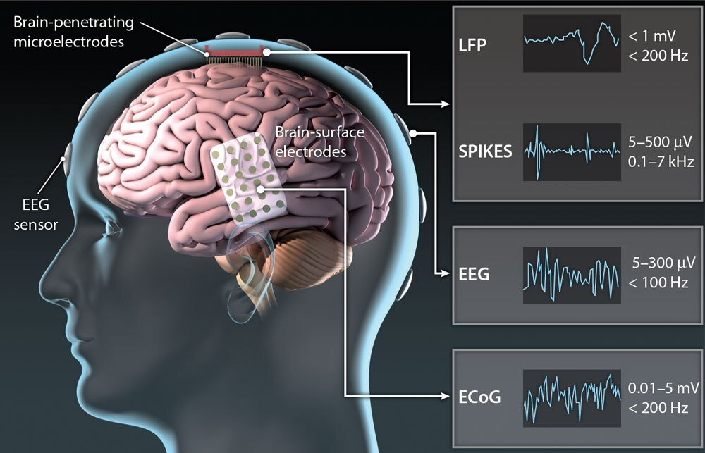
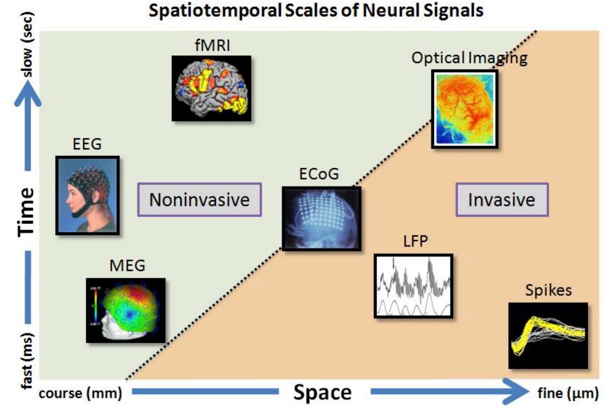
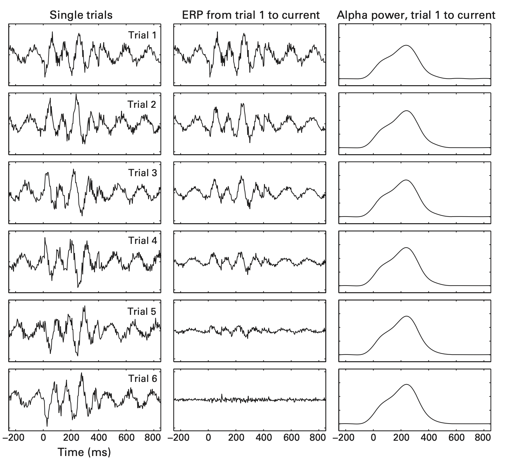
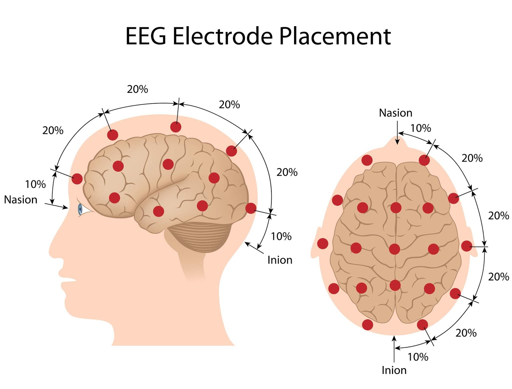
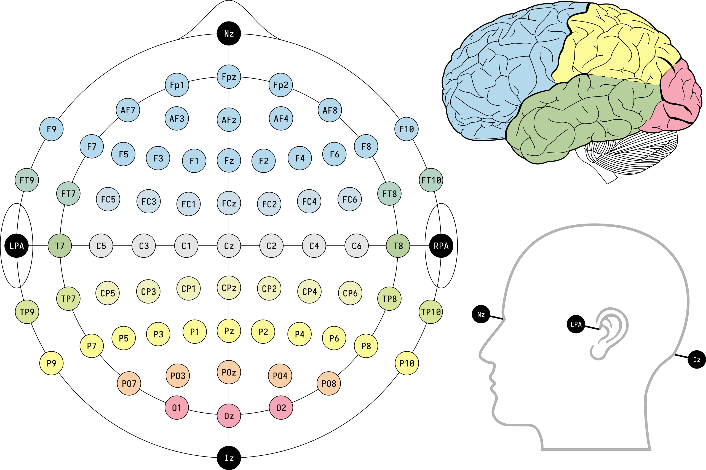
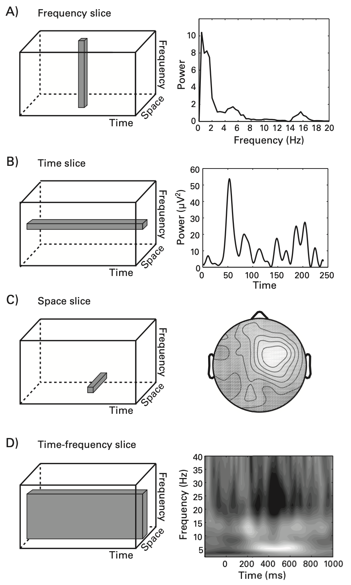

BME | EEG Analysis - Introduction
Neural Time Series Data Types
EEG (electroencephalogram) measures electrical activity through field changes.
- Scalp EEG: Non-invasive, resembling wearing a cap on the head.
- iEEG (intracranial EEG): Invasive, requires a craniotomy.
- Stereotactic EEG / Depth electrode: Embedded deep within brain tissue.
- ECoG (electrocorticogram): Surface-level measurement on the brain cortex.
- MEG (magnetoencephalogram): Measures magnetic field changes.
- fMRI/PET: Measures blood flow changes, typically using BLOD.
- LFP (local field potential)
- Spike (single unit)


Characteristics of EEG
Advantages and Disadvantages
Advantages
- EEG has high time resolution, ideal for studying rapidly occurring neural activities like cognitive, perceptual, linguistic, emotional, and motor processes.
- Reflects neural activity directly from the brain cortex.
- Captures multidimensional data: time, space, etc.
Disadvantages
- Not suitable for studying deep brain regions.
- Not optimal for pinpoint accurate research.
- Inadequate for research requiring extremely high time precision due to constantly changing brain states.
For detecting high-frequency activity above 60Hz, MEG is preferable over EEG.
Units
- EEG unit: Typically measured in volts, in millivolts () or microvolts ().
- MEG unit: Usually measured in tesla, in femtotesla (), equal to .
Oscillation in EEG
| Name | Frequency Range (Hz) | Location | Remarks |
|---|---|---|---|
| Delta | <4 | - Non-REM sleep - Children - Continuous attention tasks |
|
| Theta | 4-8 | - Common in infants - Drowsiness in adults and adolescents - Attempting to suppress instinctive responses - Stage 1 sleep |
|
| Alpha | 8-12 | - Relaxation - Eyes closed - Long-distance communication across brain areas |
|
| Mu (SMR) | 8-13 | - Also called sensorimotor rhythm (SMR) - Autism - Rest-state motor neurons |
|
| Sigma | 12-16 | - Non-REM sleep → Memory consolidation | |
| Beta | 15-30 | - High mental activity: Attention concentration, high alertness, anxiety | |
| Low Gamma | 30-80 | - Multi-sensory, consciousness - Short-term memory |
|
| High Gamma | 80-150 | - Emotion | |
| Ripples | 80-250 | - HFO (high-frequency oscillations) → Often associated with diseases like epilepsy | |
| Fast Ripples | 250-500 | - HFO (high-frequency oscillations) → Often associated with diseases like epilepsy |
Note: There is no unified definition for frequency ranges in academic literature, and different sources may present different ranges.
ERP vs Time-Frequency Based Approach
ERP
ERP (Event-Related Potentials) is obtained by averaging EEG signals from multiple repetitive events to eliminate noise irrelevant to events. An example is the P300, a positive wave occurring approximately 300ms after a surprising event.
However, time-locked but non-phase-locked activities result in information loss after ERP averaging. For example, the amplitude values obtained by averaging with ERP (second column in the image below) gradually disappear due to the positive and negative overlays from different trials. Calculating power, on the other hand, shows noticeable frequency growth.

Time-Frequency Based Approach
This approach is useful in obtaining information about oscillations.
Topographical Localization
Topography typically displays electrode positions, as shown in the image below:
10-20 System
The 10-20 system is an international standard for EEG electrode placement. The numbers 10 and 20 indicate the distances between adjacent electrodes, being 10% or 20% of the total anterior-posterior or left-right distances of the skull, as shown below:


Time-frequency Result

Excellent Reference Materials
- Book: “Analyzing Neural Time Series Data”
- Lectures by Cohen: https://mikexcohen.com/lectures.html
- MATLAB code from Cohen’s book: https://github.com/mikexcohen/AnalyzingNeuralTimeSeries
- Translated Python code from Cohen’s book: https://github.com/lyndond/Analyzing_Neural_Time_Series/tree/master/notebooks
- Book: “Neural Data Science” in Python: https://neuraldatascience.io/intro.html
- Recommended reference books: https://zhuanlan.zhihu.com/p/521485505
Disclaimer: This blog content serves as class notes, shared for educational purposes. Some images and content are sourced from textbooks, lecture materials, and the internet. If there are any copyright concerns, please contact aursus.blog@gmail.com for removal.